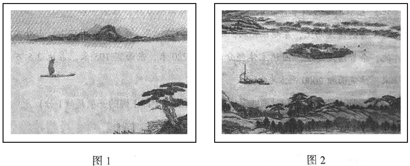

2018年北京市中考语文试题 · 古诗文读 第8、9、10、11、12、13题
（二）阅读《次北固山下》，完成8－10题。（共6分）
次北固山下
王湾
客路青山外，行舟绿水前。
潮平两岸阔，风正一帆悬。
海日生残夜，江春入旧年。
乡书何处达？归雁洛阳边。
8．这首诗表达了诗人的思乡之情。诗人离乡远游，来到北固山下，看到残夜未尽而旭日已经升起、旧年未逝而春意已经显现，生发了 的感慨。他想托鸿雁捎一封家信到洛阳，问候家乡的亲人。（1分）
9．阅读画线诗句，观察下面两幅图画，简要说明哪一幅能够表现这一联诗句所描绘的景象。（3分）

答
10．这首诗描写了长江的风光。在我国古代诗词中，还有许多含“江”（长江）的诗句，其中，你读过的两句诗是“ ① ”和“ ② ”。（每句诗中允许有一个不会写的字用拼音替代）（2分）
（三）阅读《出师表》（节选），完成11－13题。（共8分）
侍中、侍郎郭攸之、费祎、董允等，此皆良实，志虑忠纯，是以先帝简拔以遗陛下。愚以为宮中之事，事无大小。悉以咨之，然后施行，必能裨补阙漏，有所广益。
将军向宠，性行淑均，晓畅军事，试用于昔日，先帝称之曰能，是以众议举宠为督。【甲】愚以为营中之事，悉以咨之，必能使行阵和睦，优劣得所。
亲贤臣，远小人，此先汉所以兴隆也；亲小人，远贤臣，此后汉所以倾颓也。【乙】先帝在时，每与臣论此事，未尝不叹息痛恨于桓、灵也。侍中、尚书、长史、参军，此悉贞良死节之臣，愿陛下亲之信之，别汉室之隆，可计日而待也。
臣本布衣，躬耕于南阳，苟全性命于乱世，不求闻达于诸候。先帝不以臣卑鄙，猥自枉屈，三顾臣于草庐之中，咨臣以当世之事，由是感激，遂许先帝以驱驰。【丙】后值倾覆，受任于败军之际，奉命于危难之间，尔来二十有一年矣。
先帝知臣谨慎，故临崩寄臣以大事也。受命以来，夙夜忧叹，恐托付不效，以伤先帝之明，故五月渡泸，深入不毛。今南方已定，兵甲已足，当奖率三军，北定中原，庶竭驽钝，除奸凶，兴复汉室，还于旧都。此臣所以报先帝而忠陛下之职分也。至于斟酌损益，进尽忠言，则攸之、祎、允之任也。愿陛下托臣以讨贼兴复之效，不效，则治臣之罪，以告先帝之灵。若无兴徳之言，则责攸之、祎、允等之慢，以彰其咎；陛下亦宜自谋，以咨诹善道，察纳雅言，深追先帝遗诏。臣不胜受恩感激。
今当远离，临表涕零，不知所言。
11．下列选项各有两组词语，每组词语中加点字的意思都相同的一项是（2分）
A．有所广益／精益求精 计日而待／不计其数
B．不求闻达／知书达理 由是感激／实事求是
C．夙夜忧叹／优心如焚 庶竭驽钝／尽心竭力
D．察纳雅言／温文尔雅 临表涕零／涕泪交流
12．翻译文中三处画线语句，并依据上下文对其作出进一步理解，全都正确的一项是（2分）
【甲】愚以为营中之事，悉以咨之，必能使行阵和睦，优劣得所。
翻译：我认为军营中的事情，都要征询他的意见，就一定能使军队上下团结和睦，品行高低不同的人各有合适的安排。
理解：请葛亮之所以推荐向宠是因为向宠人品好，军事才干突出，深得刘备赞誉。
【乙】先帝在时，每与臣论此事，未尝不叹息痛恨于桓、灵也。
翻译：先帝在世的时候，每次跟我谈论起这些事情，都会为桓帝、灵帝二位君主深深叹息，并对他们感到痛心和遗憾。
理解：刘备痛心和遗憾的原因是桓、灵二帝亲近小人，疏远贤臣，造成了东汉的衰败灭亡。
【丙】后值倾覆，受任于败军之际，奉命于危难之间，尔来二十有一年矣。
翻译：后来遇到兵败，在战事失败的时候我接受了重任，在危难关头我受到委任，至今已有二十一年了
理解：诸葛亮于“倾覆”时接受任务，是为了报答刘备三顾茅庐和临终托付大事的恩情。
13．为国尽忠是中华传统美德。请你根据上文和下面的两则【链接材料】，概括说明为国尽忠在诸葛亮、魏征、岳飞身上分别是如何体现的。（4分）
【链接材料一】
太宗①新即位，励精政道，数引征②入卧内，访以得失。征雅③有经国之才，性又抗直，无所屈挠。太宗与之言，未尝不欣然纳受。征亦喜逢知己之主，思竭其用，知无不言。太宗尝劳④之曰：“卿所陈谏，前后二百余事，非卿至诚奉国，何能若是？”其年，迁尚书左丞。
（节选自《旧唐书·魏征传》 ）
【链接材料二】
嗣⑤当激厉士卒，北逾沙漠，尽屠夷种。迎二圣⑥归京阙，取故地上版图，朝廷无虞⑦，主上奠枕⑧，余⑨之愿也。
（节选自岳飞《五岳祠盟记》 )
注：①［太宗］李世民，唐代皇帝。 ②［征］魏征，唐初政治家。 ③［雅］平日，向来。 ④［劳］慰劳。 ⑤［嗣］随后，接下来。 ⑥［二圣］指被金兵俘虏北去的宋徵宗和宋钦宗。 ⑦［虞］优處，忧患。 ⑧［奠枕］安枕。 ⑨［余］指岳飞。
答